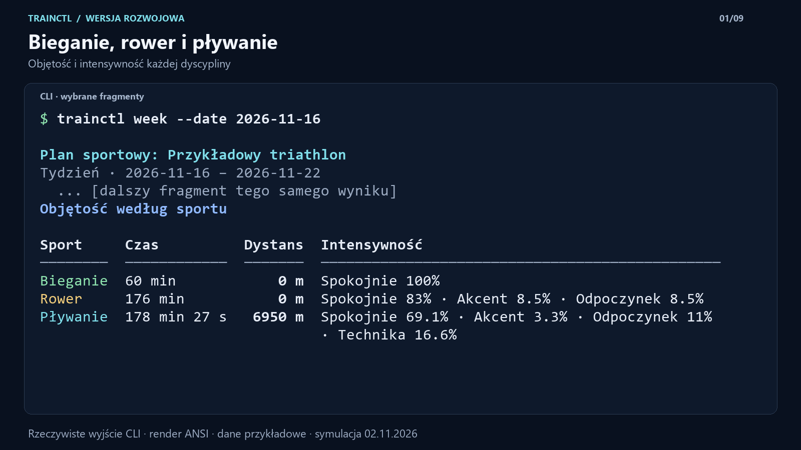
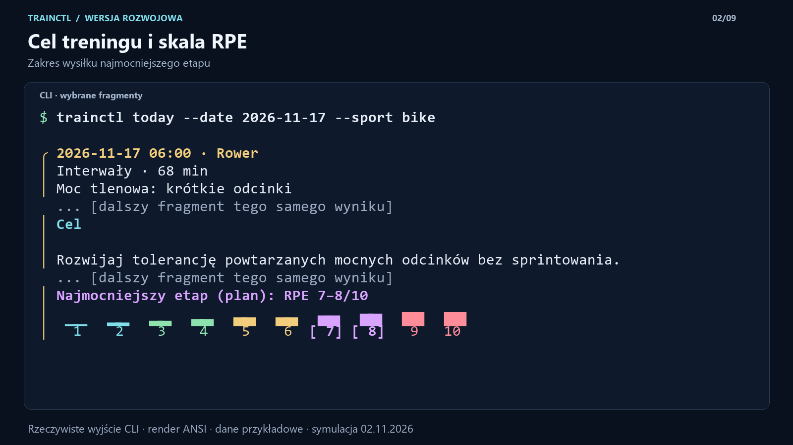
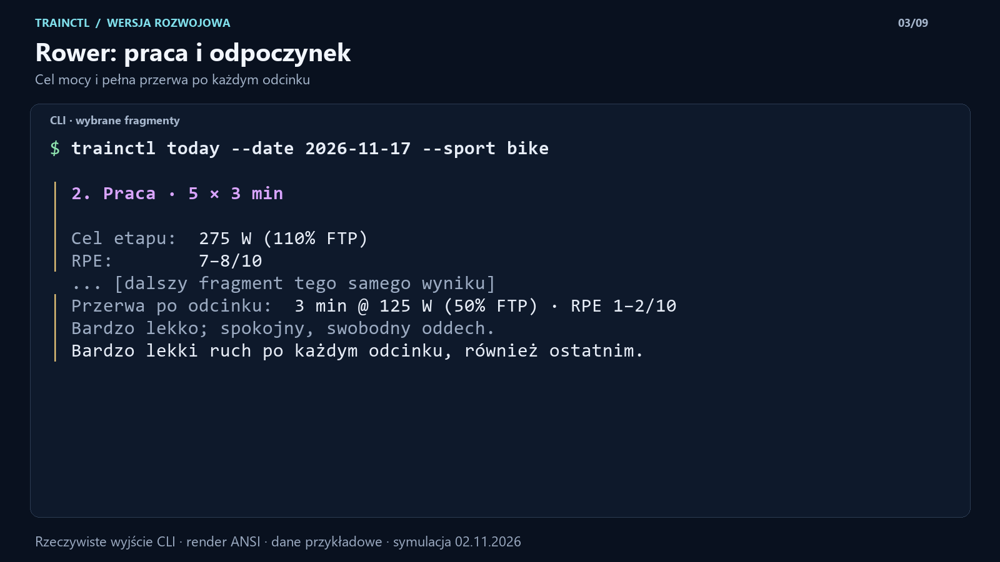
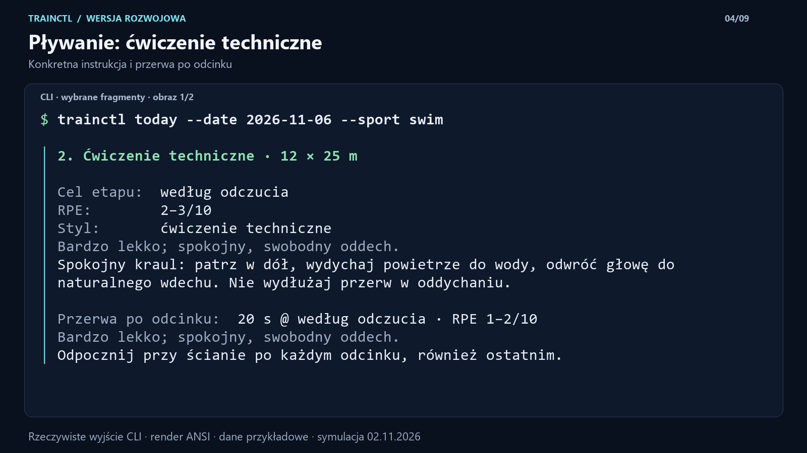
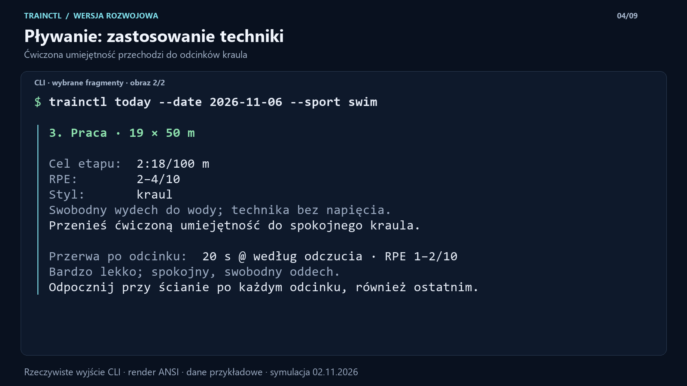
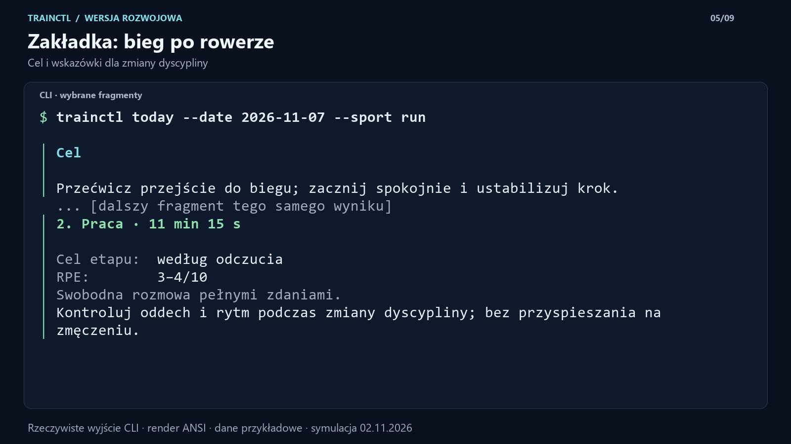
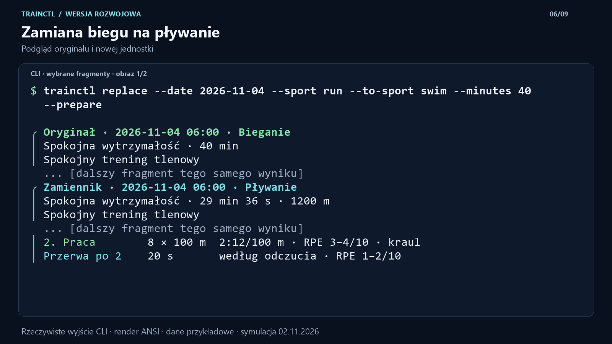
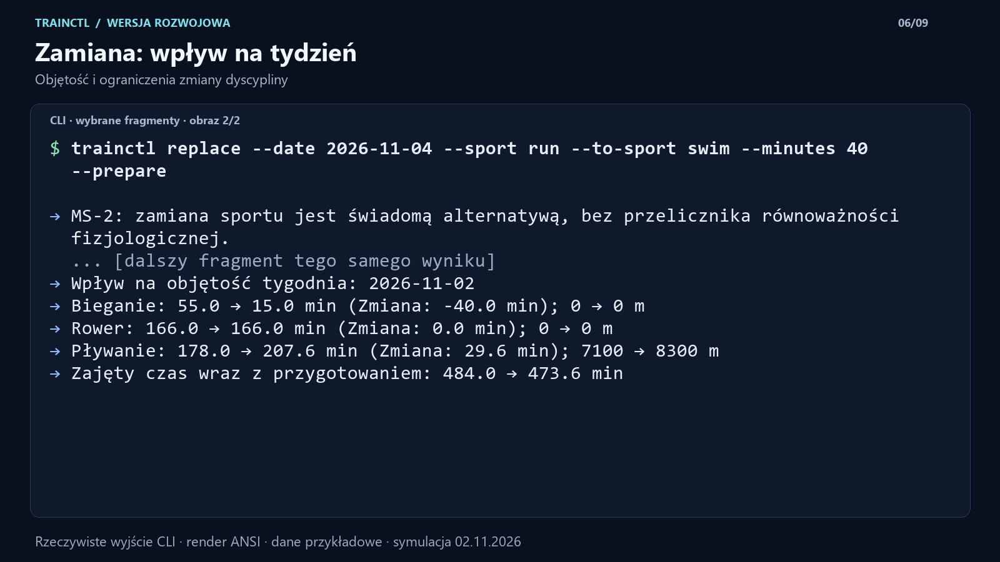
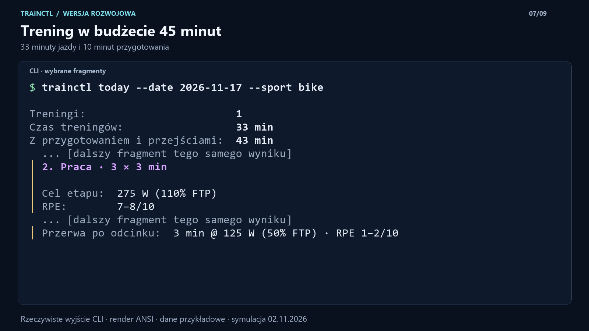
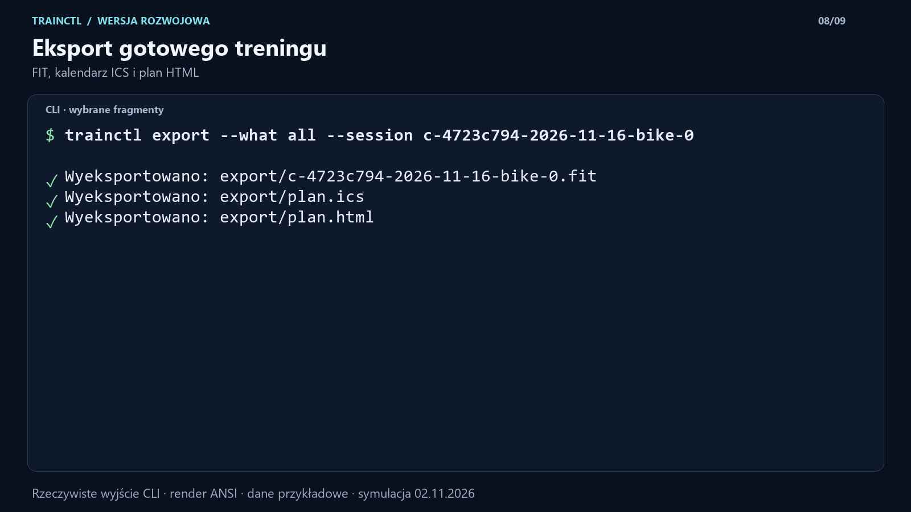

WPIS 01 / 09 · 234 znaków

Opis alternatywny obrazu 1
Podsumowanie tygodnia w trainctl. Tabela pokazuje osobno bieganie, rower oraz pływanie, z czasem każdej dyscypliny i udziałem planowanej intensywności.

Wszystkie obrazy mają poziomy format 1600 × 900 i maksymalnie 16 wierszy terminala. Do wpisów 4 i 6 dołącz po dwa obrazy w podanej kolejności. Kliknięcie w tekst zaznacza cały wpis. Każdy wpis ma mniej niż 280 znaków.
Obrazy to oznaczone fragmenty rzeczywistego wyjścia CLI wyrenderowane z kolorów ANSI. Dane są przykładowe. Pełne wyniki i dokładne zakresy wybranych wierszy znajdują się w pakiecie. Treść opisuje wersję rozwojową; nic nie zostało opublikowane na X.
Podsumowanie tygodnia w trainctl. Tabela pokazuje osobno bieganie, rower oraz pływanie, z czasem każdej dyscypliny i udziałem planowanej intensywności.

Cel treningu rowerowego: powtarzane mocne odcinki bez sprintowania. Kolorowa skala od 1 do 10 zaznacza planowany zakres RPE od 7 do 8.

5 odcinków po 3 minuty przy 275 W i RPE 7 do 8. Po każdym odcinku, również ostatnim, 3 minuty odpoczynku przy 125 W i RPE 1 do 2.

Ćwiczenie techniczne 12 razy 25 metrów, RPE 2 do 3. Instrukcja dotyczy pozycji głowy i swobodnego oddychania. Po każdym odcinku 20 sekund odpoczynku przy ścianie.
Po ćwiczeniu technicznym plan zawiera 19 razy 50 metrów kraulem w tempie 2:18 na 100 metrów. RPE od 2 do 4, przerwa 20 sekund po każdym odcinku.


Celem biegu po rowerze jest spokojne przejście do biegu i ustabilizowanie kroku. Część główna trwa 11 minut 15 sekund przy RPE 3 do 4, z kontrolą oddechu i rytmu.

Podgląd zamiany 40 minut biegu na 29 minut 36 sekund pływania, łącznie 1200 metrów. Część główna nowej jednostki obejmuje 8 razy 100 metrów i 20 sekund przerwy po odcinku.
Podgląd wskazuje, że zamiana dyscypliny nie oznacza równoważności fizjologicznej. Tygodniowa objętość biegu spada o 40 minut, a pływania rośnie o 29,6 minuty. Rower pozostaje bez zmian.


Po skróceniu trening zajmuje 33 minuty, a wraz z przygotowaniem 43 minuty. Pozostają 3 odcinki po 3 minuty przy 275 W oraz pełne 3 minuty odpoczynku przy 125 W.

CLI potwierdza zapis wybranej jednostki rowerowej do FIT oraz eksport planu do plików ICS i HTML.
